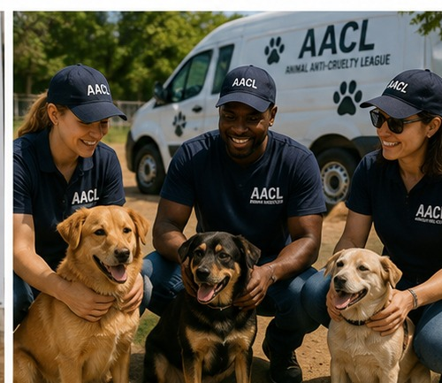
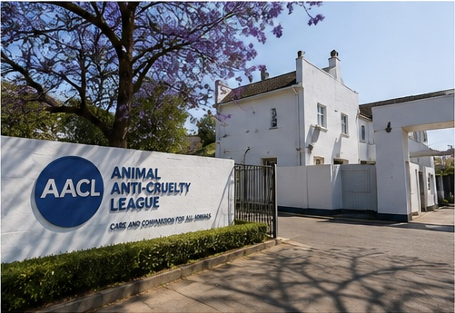

About Us
Learn more about the Animal Anti-Cruelty League and its commitment to animal welfare.
Our History

The Animal Anti-Cruelty League has been protecting and caring for animals since 1956.
The organisation works to protect animal cruelty, neglect and abuse while providing care and support to animals in need.
Our Mission
Our mission is to protect animals and promote responsible animal ownership through welfare services, education, community outreach and animal protection.
Our Vision
Our vision is a society where animals are treated with kindness, respect and compassion.
Who We Serve

- Pet owners
- People interested in adopting animals
- Volunteers
- Donors and sponsors
- Animal welfare supporters
- People reporting animal cruelty
- Schools and community organisations